Port
folio
Obinna Oti
Product Design.
Work Done
I’ve worked with a wide range of clients, from luxury apparel brands to independent labels, helping them shape products that feel elevated, purposeful and manufacturable. My work spans:
- Concept development, sketching and costing
- Footwear and industrial object design, blending sculptural form with technical function
- 3D modelling, rendering and product visualisation for collections and campaigns
- Tech packs and production communication, guiding suppliers from proto through to SMS
- Material direction across trims, metals, fabrics, TPU, leathers and surface detail
Process
- 01SketchLoose studies to find the flow of an idea.
- 02ConstructThe strongest directions built to standard sizes and checked for fit.
- 03ModelDeveloped in 3D and rendered to test form, colour and material.
- 04DetailResolved for production through tech packs and supplier communication.
Project
Content
Selected work, 2020—2025.
Choose a project to go straight to it.
01
Vivonne Cabin
Context
A compact, two-zone cabin set among trees. Sleeping and wet areas sit to the rear, while the living space opens to the landscape through a full-height glazed wall. The project was developed from early plans through to detailed construction drawings.
AS & NCC Requirements
The design was documented to meet the relevant Australian Standards and the National Construction Code, covering structure, weatherproofing, insulation and energy efficiency. Each junction was resolved in section so the cabin can be built as drawn.
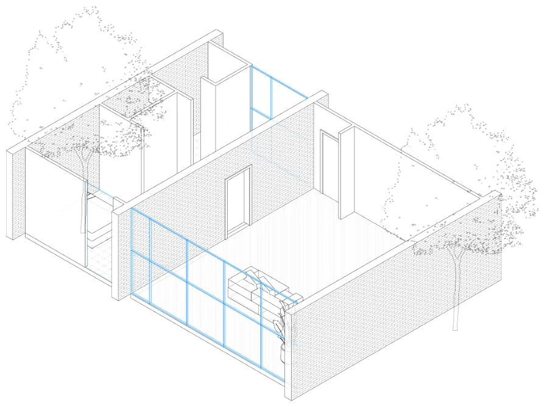
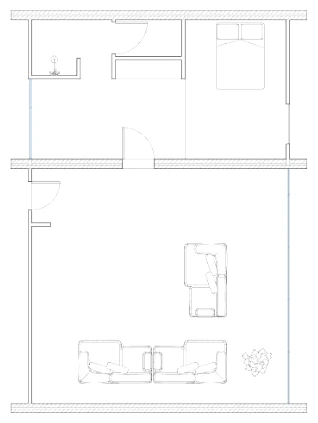
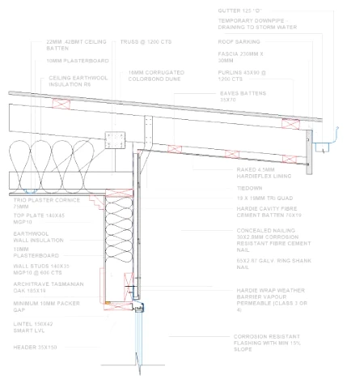
Task
Roof Detail
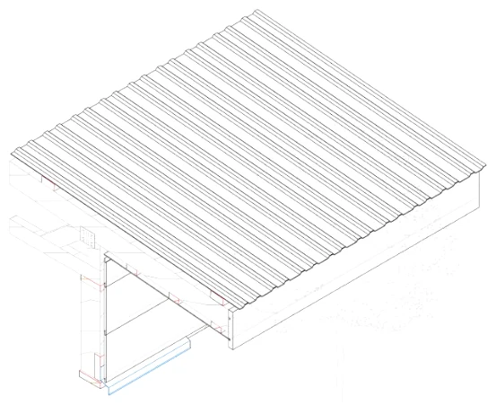
Section
Detail 4 resolves the eaves: trusses carrying battens and a corrugated metal roof over an insulated ceiling, with fascia, gutter and flashings detailed to shed water clear of the wall below.
3D model
The same junction modelled in 3D to check the build sequence and how roof sheeting, fascia and wall lining meet at the corner.
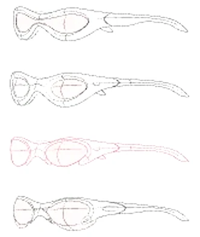
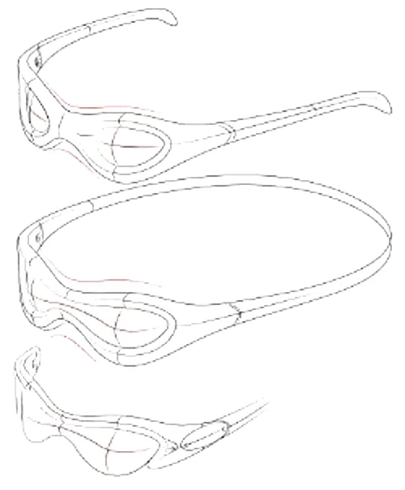
Projects
Sting rays
Construction process
Early sketches explored the flow of the frame: one sweeping line running from temple tip to lens. The strongest directions were then constructed around standard head sizes, checking front and side profiles for fit, coverage and wrap.
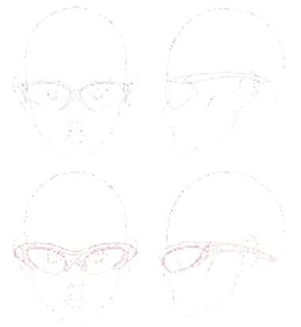
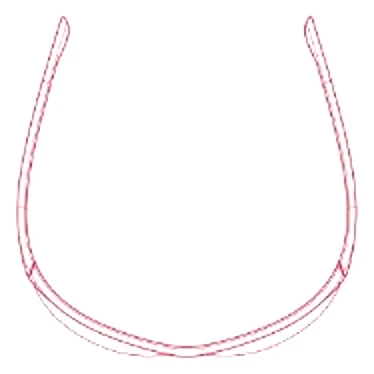
Process
The final idea was drawn to scale, then modelled in 3D. The frame splits into a sculpted temple and a lens chassis joined by an exposed hinge, so each part could be refined on its own before the whole was rendered.
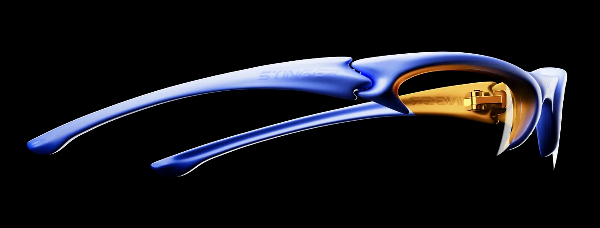
Moodboard
Named after the stingray: a flat, gliding body with a long, whip-like tail. The frame borrows that silhouette, with wide wings that wrap the face and taper into a single sweeping temple.
Tone
Cobalt and amber. A saturated blue body reads fast and technical, while the warm amber lens adds depth and glows where light passes through.
Range
Hero colourway: gloss cobalt frame, amber lens and gold hinge hardware. Embossed branding runs along each temple.
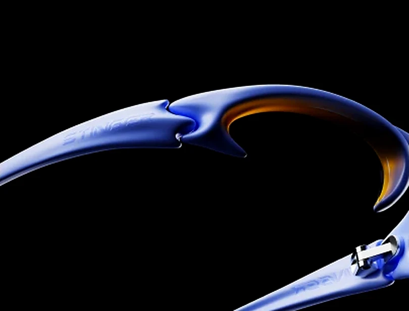
Detail
The hinge sits exposed inside the lens chassis, turning a functional part into a visual signature. Its gold finish ties back to the amber lens.
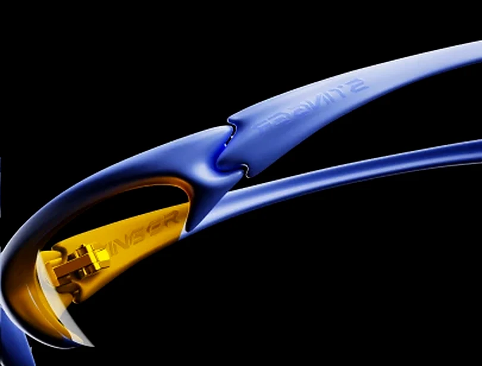
Finish
Soft, sculpted surfaces catch long highlights along the temples, while sharp edges at the lens give the frame its attitude.
03
Project Title
Context
A short introduction to the project: what it is, who it was for and the problem it set out to solve.
Approach
How you worked through it, from research and sketching to the final outcome. Replace this copy in index.html.
04
Project Title
Context
A short introduction to the project: what it is, who it was for and the problem it set out to solve.
Process
Key steps, decisions and iterations.
Outcome
What was made, and what it achieved.
Thank you.
Get in touch to talk about a project.
Contact
© 2025 Obinna Oti
Obinna Oti
Product Design — Portfolio 2020—2025